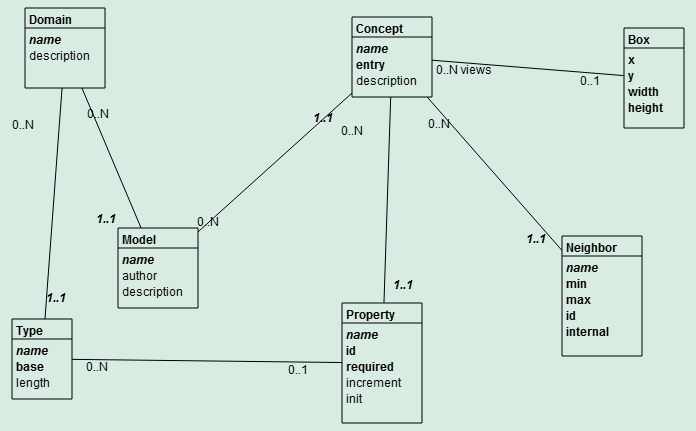

Your Model
In the File menu, save your model as a .png image:
You may save the model image as the model.png file in the MagicBoxes/img directory.
The Magic Boxes tool is developed in Dart to start learning Dart (after reading the Getting Started section, developing the first example, and the Ping Pong game). The tool is based on the Magic Boxes and on Modelibra Modeler, both developed in Java.
The code of Magic Boxes in Dart is kept at GitHub. If you are new to Git, you should really start learning it. However, if you are impatient to start learning Dart, you may want to download the spirals.
With the spiral 10, you can start designing a model such as the meta model in the following diagram. 
However, you cannot still save a model in a file.
Click the box tool to create a box (a concept in your domain), by clicking on an empty space in the board.
To move a non selected box, click the box and keep the mouse down while moving it. The connected lines will follow. A selected box cannot be moved.
Click the box to select it. Click again to deselect it. If there are several selected boxes (and/or lines), you may deselect them all by clicking on an empty space in the board. For the last selected box, its title (name) may be changed by entering text in the Box field of the tool bar. For the last selected box, an item may be added by entering its name in the Item box, then clicking on the Add button. The item is an attribute of the box (concept). In addition, it may be declared as guid (globally unique identifier--not significant to a user), identifier (significant to a user) or required (mandatory value). The choice is presented in the pop-up list. An existing item may be obtained by entering its name and clicking on the Get button. The obtained item may be changed, including its sequence position within the box, (Set button) or even removed (Remove button). The size of selected boxes may be changed by menu items in the View menu.
If you want to create several boxes, double-click the box tool to stay on. To return to the select mode double-click the select tool.
Click the line tool to create a line between the last two clicked boxes, by clicking on an empty space in the board. The first box is a parent and the second box is a child. By default, the parent box has 0..N cardinalities. The min is 0 and the max is N. By default, the child box has 1..1 cardinalities. An example is Department--0..N----1..1--Employee. A department has from 0 to N employees and an employee works for exactly one department. The last selected line may be obtained by clicking on the Get button in the tool bar. The line is a relationship between two boxes (concepts). It has two directions: from parent to child (neighbor) and from child to parent (neighbor). In addition, it may be declared as inheritance (child inherits from parent), reflexive (one, not two boxes) or twin (two lines between two boxes). The choice is presented in the pop-up list. The line cardinalities may be changed. For the 1..1 cardinalities, the identifier (id) may be checked on. The line changes may be set by clicking on the Set button.
Click the line, or very close to it, to select it. Click again to deselect it. If there are several selected lines (and/or boxes), you may deselect them all by clicking on an empty space in the board.
If you want to create several lines, double-click the line tool to stay on. To return to the select mode double-click the select tool.
In the File menu, save your model as a .png image:
You may save the model image as the model.png file in the MagicBoxes/img directory.
The spiral approach to software learning and development, which preserves a project history as a series of code snapshots or spirals, is used in this project.
Learning new software concepts and technologies is a challenging task. Learning in spirals, from simple to more advanced concepts but with concrete software applications, helps students get a reasonable confidence level early on, and motivates them to learn by providing more useful applications. With each new spiral, the project grows and new concepts are introduced. A new spiral is explained with respect to the previous one. The difference between two consecutive spirals is that the next spiral has the new code introduced and the old code modified or deleted. This is called learning by anchoring to what we already understand. With a new spiral, we can come back to what we did previously and improve it. In this way, learning in spirals can touch the same topic several times, but each time with more details in a better version.
There are many books where students have to learn quite a lot before applying new concepts, and even then, it is not obvious how to develop a complete software application. It took me more than ten years of learning and teaching to find out that the initial learning of a new technology must be task driven and not topic (subject) driven. Most software books are topic driven. It takes a quick look at the Table of Contents of almost any software book to realize that each chapter introduces a major topic. In a spiral, there may be more than one topic and all of them relate to what we want to accomplish with the spiral.